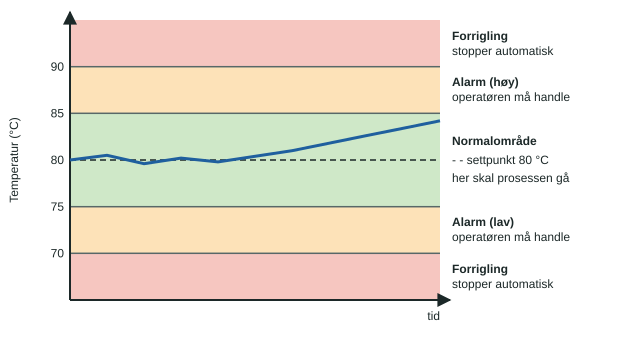

Kontroll av prosessen
For å lage riktig produkt, sikkert, må operatøren hele tiden vite om prosessen går som den skal. Det gjør du ved å sammenligne det du måler med faste grenser, og ved å følge med på hvordan verdiene utvikler seg over tid.
Hva skal kontrolleres?
Operatøren kontrollerer to ting:
- Prosessen: Temperatur, trykk, nivå og mengde er de viktigste. De kalles prosessparametere. Hvis de er riktige, blir produktet som regel riktig, og anlegget går sikkert.
- Produktet og utslippene: Det er ikke alt som kan måles i rørene. Mange egenskaper må analyseres på laboratoriet, for eksempel konsentrasjon, renhet, pH eller innhold av urenheter. Det gjelder også det som slippes ut til vann og luft.
Kravene til produktet står i en spesifikasjon. Den sier hvilke verdier produktet skal ha, for eksempel at renheten skal være minst 99,5 %, eller at pH skal ligge mellom 6,0 og 8,0. Et produkt som er utenfor spesifikasjonen, kan ikke selges som vanlig.
Driftsgrenser
For hver viktig prosessparameter er det bestemt hvor verdien skal ligge. Grensene kalles driftsgrenser. De er satt av prosessingeniører ut fra hva som er sikkert, hva utstyret tåler og hva som gir riktig produkt. De står i driftsinstruksen for anlegget.

Figuren viser tre slags grenser:
- Normalområdet (grønt) er der prosessen skal gå. Her ligger settpunktet. Små svingninger er helt vanlig.
- Alarmgrensene (gult) sier fra til operatøren at verdien har gått ut av normalområdet og er på vei mot forriglingsgrensen. Nå må du finne ut hvorfor og gjøre noe. Hvordan du håndterer en alarm, står i Operatørbilder og alarmer.
- Forriglingsgrensene (rødt) er den siste sikringen. Når verdien når dit, stopper forriglingen utstyret eller anlegget automatisk, uten at operatøren gjør noe.
Målet er at prosessen aldri skal komme i nærheten av de røde feltene. Det er operatørens jobb å oppdage og rette opp i god tid, mens verdien fortsatt er i det grønne eller gule.
Tre måter å kontrollere på
Kontrollen av prosessen skjer på tre måter samtidig:
- Automatisk regulering. Regulatorene i styresystemet holder temperaturer, trykk, nivåer og mengder på settpunktet. De retter opp små forstyrrelser av seg selv, hele tiden. Hvordan det virker, lærer du i Automasjon.
- Operatørens overvåking. Regulatoren kan bare rette opp det den måler, og bare så langt utstyret strekker til. Operatøren følger med på prosessbilder og trender, går runder og ser etter det som ikke blir målt. En trend er en kurve som viser hvordan en måleverdi har endret seg over tid.
- Prøver og analyser. Operatøren tar prøver av råstoff, mellomprodukter, ferdig produkt og utslipp, og laboratoriet analyserer dem. Svarene viser om produktet er innenfor spesifikasjonen. Hvis ikke, må prosessen justeres.
Prøvetaking
Hvilke prøver som skal tas, står i en prøveplan. Den sier hvor prøven skal tas (prøvepunktet), hvor ofte, og hva som skal analyseres. Prøvene tas på faste tider, slik at svarene kan sammenlignes over tid.
En prøve er bare nyttig hvis den er representativ. Det betyr at den lille mengden du tar ut, skal være lik resten av stoffet i røret eller tanken. Derfor:
- Tapp først ut litt og kast det (spyl prøvepunktet). Det som har stått stille i røret, er ikke likt det som strømmer forbi.
- Bruk ren prøveflaske av riktig type, og fyll den slik prosedyren sier.
- Merk flasken med prøvepunkt, dato og klokkeslett med en gang.
- Lever prøven raskt. Noen prøver endrer seg hvis de blir stående.
Følg med på utviklingen
Det er ikke nok å sjekke om én verdi er innenfor grensene. Se også hvilken vei verdiene går. En verdi som sakte og jevnt stiger eller synker, er et tegn på at noe er i ferd med å endre seg, selv om den fortsatt er i normalområdet. Kurven i figuren over er et eksempel på dette.
Oppgave: Renset prosessvann skal ha pH mellom 6,0 og 8,0 før det slippes ut. Det tas prøve hver fjerde time. De seks siste prøvene viste:
| Klokka | 02 | 06 | 10 | 14 | 18 | 22 |
|---|---|---|---|---|---|---|
| pH | 7,0 | 7,1 | 7,0 | 7,3 | 7,5 | 7,7 |
Er alt i orden?
Løsning:
- Er verdiene innenfor grensene? Ja. Alle ligger mellom 6,0 og 8,0.
- Hvilken vei går verdiene? De tre første ligger jevnt rundt 7,0. De tre siste har steget med 0,2 for hver prøve: 7,3, 7,5 og 7,7.
- Hva skjer hvis det fortsetter? pH stiger 0,2 på 4 timer, altså 0,05 i timen. Fra 7,7 til grensen 8,0 er det 0,3. Det tar 0,3 / 0,05 = 6 timer. Grensen passeres altså rundt klokka 04, men det blir først oppdaget ved prøven klokka 06, som viser 8,1. Vann som slippes ut i mellomtiden, kan være utenfor grensen uten at noen ser det.
Svar: Alle prøvene er innenfor, men pH stiger jevnt. Grensen kan være passert om omtrent 6 timer, før neste prøve viser det. Operatøren bør derfor ikke vente til grensen er nådd. Ta en ekstra prøve, se etter årsaken (for eksempel doseringen av syre i renseanlegget), meld fra og skriv det i driftsloggen.
Gjør det likt hver gang
Kontroll handler også om at alle gjør jobben på samme måte. Driftsinstrukser og prosedyrer beskriver hvordan anlegget skal kjøres, startes og stoppes, og hvordan prøver skal tas. Når alle skift følger de samme prosedyrene, blir prosessen jevnere, og det er lettere å se når noe er unormalt.
Ser du at en prosedyre er feil eller vanskelig å følge, skal du ikke bare gjøre det på din egen måte. Meld fra, slik at prosedyren kan bli rettet. Mer om dette får du på siden Kontinuerlig forbedring og vaktoverlevering.
- Prøvetaking: Prøvepunktet kan ha trykk, høy temperatur eller farlige kjemikalier. Bruk verneutstyret som prosedyren krever, for eksempel vernebriller eller visir og hansker. Åpne prøveventilen sakte, og stå slik at du ikke får sprut eller damp mot deg.
- Grenser og forriglinger: Endre aldri alarmgrenser eller koble ut en forrigling for å få anlegget til å gå. Det skal bare gjøres etter fast prosedyre og med tillatelse.
- Handle tidlig: Jo lenger du venter med en verdi som er på vei ut av normalområdet, jo mindre tid har du til å rette opp.
Test deg selv
1. Hva er en spesifikasjon?
- En liste over hvem som er på skift
- Kravene til hvilke verdier et produkt skal ha
- En tegning av anlegget
Spesifikasjonen sier for eksempel hvor rent produktet skal være, eller hvilken pH det skal ha. Prøvesvarene sammenlignes med spesifikasjonen.
2. Temperaturen i reaktoren når forriglingsgrensen. Hva skjer?
- Det kommer en alarm, og operatøren bestemmer om anlegget skal stoppe.
- Forriglingen stopper utstyret eller anlegget automatisk.
- Regulatoren endrer settpunktet.
Forriglingsgrensen er den siste sikringen. Da stopper forriglingen utstyret automatisk, uten at operatøren trenger å gjøre noe. Alarmen kommer tidligere, ved alarmgrensen.
3. Hvorfor trengs operatøren når regulatorene holder prosessen på settpunktet?
- Regulatoren kan bare rette opp det den måler, og bare så langt utstyret strekker til.
- Regulatorene virker bare om dagen.
- Operatøren må justere hver ventil for hånd.
Lekkasjer, slitasje, feil i målere og produktkvalitet som ikke måles i røret, oppdager ikke regulatoren. Det må operatøren gjøre.
4. Hvorfor skal du tappe ut litt og kaste det før du tar en prøve?
- For å sjekke at ventilen virker
- Fordi det som har stått stille i røret, ikke er likt det som strømmer forbi
- For å få mindre trykk i prøveflasken
Prøven skal være representativ, altså lik resten av stoffet. Det som har stått i prøverøret en stund, kan ha endret seg.
5. Alle prøvesvarene er innenfor grensene, men de har steget jevnt de siste prøvene. Hva gjør du?
- Ingenting, for alt er innenfor grensene.
- Endrer grensene, så det blir bedre plass.
- Finner årsaken, melder fra og følger med, før grensen blir nådd.
En jevn stigning viser at noe er i ferd med å endre seg. Det er mye lettere å rette opp før verdien er utenfor grensen enn etterpå.
Ordliste
| Begrep | Forklaring | Engelsk |
|---|---|---|
| prosessparameter | En størrelse som sier noe om tilstanden i prosessen, for eksempel temperatur, trykk, nivå eller mengde. | process parameter, process variable |
| spesifikasjon | Kravene til hvilke verdier et produkt skal ha, for eksempel renhet eller pH. | specification |
| driftsgrense | En grense for hvor en prosessparameter skal ligge, satt ut fra hva som er sikkert, hva utstyret tåler og hva som gir riktig produkt. | operating limit |
| normalområde | Området mellom alarmgrensene der prosessen skal gå når alt er i orden. | normal operating range |
| driftsinstruks | Skriftlig beskrivelse av hvordan et anlegg skal kjøres, med grenser og prosedyrer. | operating instruction, operating manual |
| trend | Kurve som viser hvordan en måleverdi har endret seg over tid. | trend |
| prøveplan | En plan som sier hvor, hvor ofte og hva det skal tas prøver av. | sampling plan |
| prøvetaking | Å ta ut en liten del av et stoff som skal analyseres, slik at den ligner på helheten. | sampling |
| representativ prøve | En prøve som er lik resten av stoffet den er tatt fra. | representative sample |
Les mer
- Hva er drift?: forrige side.
- Settpunkt, måleverdi og avvik: hvordan regulatoren holder prosessen på settpunktet.
- Operatørbilder og alarmer: alarmgrenser og hvordan du håndterer en alarm.
- Forriglinger: den automatiske sikringen.
Om kildene: Teksten, eksemplene og figurene på denne siden er laget for dette nettstedet. Siden bygger på undervisningsopplegg i kjemiprosess- og laboratoriefag ved Sauda vgs, som er utarbeidet med utgangspunkt i blant annet Kjemien stemmer, Laboranten og åpne nettkilder.